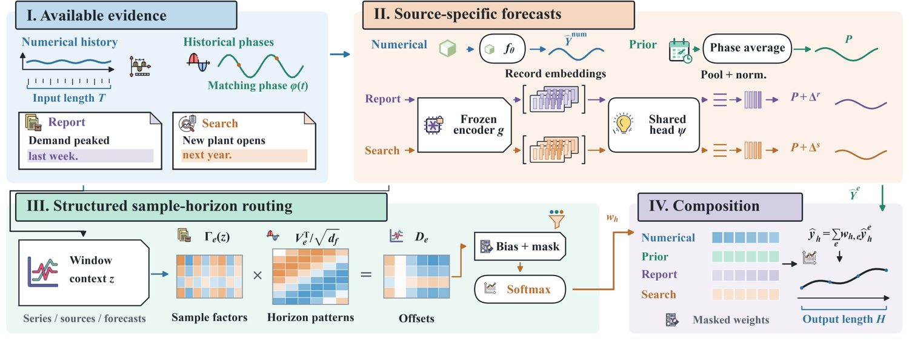
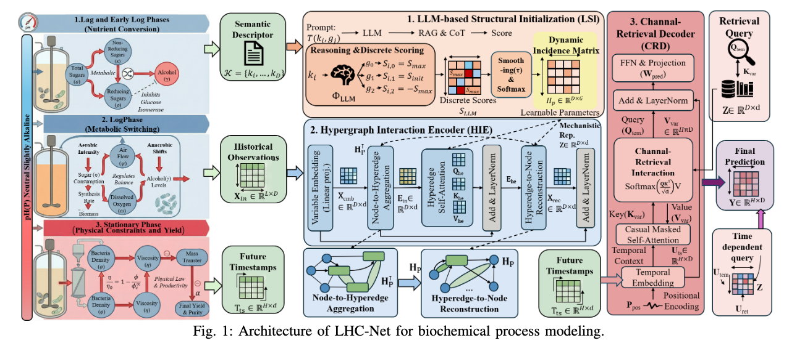
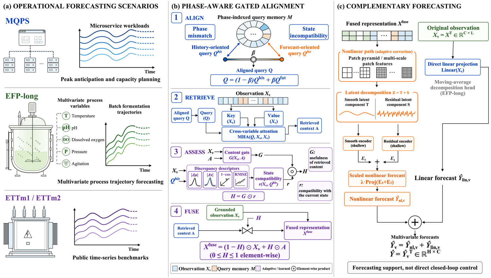
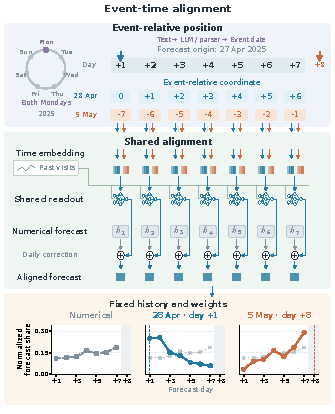
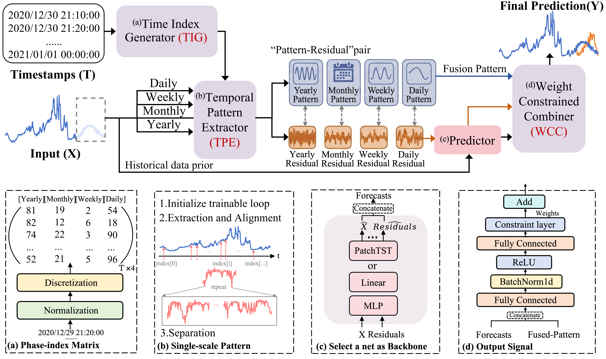
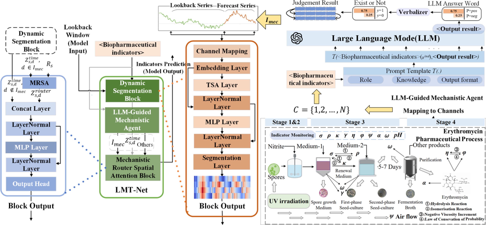
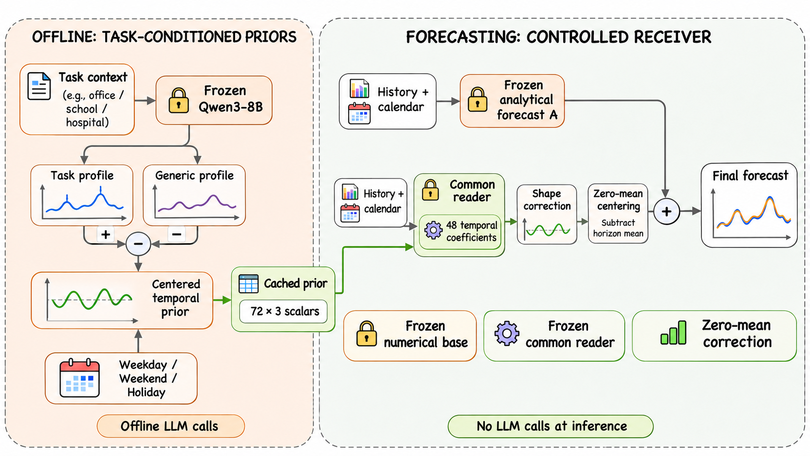

SCF: Source-Compositional Forecasting for Multimodal Time Series
Represent heterogeneous information as Numerical, Prior, Report, and Search forecasts, then compose them with availability-aware, sample–horizon factorized routing.
Temporal intelligence · Knowledge-guided forecasting
I am a doctoral student in Control Science and Engineering at Zhejiang University. My research studies structured temporal representations, multivariate dynamics, and knowledge-guided forecasting, with applications in industrial and biopharmaceutical processes.
I am interested in how temporal structure, operating state, and language-based knowledge can inform prediction. My work spans timestamp-aware modeling, conditional expert routing, and selective numerical–text fusion.
Previously, I worked on medical search relevance at Alibaba's Qwen team and multi-city supply–demand modeling at DiDi.
Temporal representations, source composition, and knowledge-guided prediction.

Represent heterogeneous information as Numerical, Prior, Report, and Search forecasts, then compose them with availability-aware, sample–horizon factorized routing.

Initialize learnable hypergraph structure with LLM-derived mechanistic priors, refine it from observations, and retrieve relevant channel representations through future temporal queries for biochemical forecasting.
Bind each process variable to its mechanistic description and combine this semantics with historical state, variable identity, and forecast step through hierarchical expert fusion.

Use history- and forecast-oriented temporal queries to retrieve cross-variable context, and regulate its contribution through content relevance and current-state compatibility.

Connect public event dates to individual forecast days through event-relative representations and history-conditioned corrections of frozen numerical forecasts.

Explicitly use timestamps to represent recurring temporal patterns, separate them from residual dynamics, and combine their forecasts.

Use a language model to construct mechanistic relations and guide spatial attention for biochemical process forecasting.
Combine structured signal decomposition, forecasting, and global-attention reconstruction for soft sensing in biopharmaceutical processes.

Study the transfer of task-conditioned temporal priors from language models into compact forecasting receivers, separating temporal assignment from receiver learning.
Multi-city supply–demand forecasting, conditional expert routing, and distribution-aware optimization for long-tailed regression.
Control Science and Engineering
Integrated master's–doctoral program
2023 — 2028 (expected)
B.Eng. in Automation
2019 — 2023